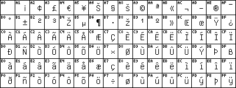

Another instance proving this thesis for me, is my little set of scripts I wrote in May 1998 to maintain my charsets documentation: Two self-written scripts make it easy to generate a font and an illustration from a mere Unicode table instead of having to draw them manually.
For each charset, all I need is a textual Unicode mapping table defining the coded character set, for example iso8859-15.txt:
=20 U+0020 SPACE =21 U+0021 EXCLAMATION MARK =22 U+0022 QUOTATION MARK ... =A3 U+00A3 POUND SIGN =A4 U+20AC EURO SIGN =A5 U+00A5 YEN SIGN ... =BC U+0152 LATIN CAPITAL LIGATURE OE =BD U+0153 LATIN SMALL LIGATURE OE =BE U+0178 LATIN CAPITAL LETTER Y WITH DIAERESIS ... =FE U+00FE LATIN SMALL LETTER THORN =FF U+00FF LATIN SMALL LETTER Y WITH DIAERESIS
Unicode mapping tables have been freely available for many charsets and new ISO standards such as the parts of ISO-8859 revised in 1998 come with explicit UCS numbers.
Whenever new charsets are defined or errors in my tables are found, I only have to edit the textual definition. Then, with the unicoded mapping table I can simply say
make iso8859-15.{bdf,gif}
to automatically generate the matching bitmap font and an illustrative bitmap
GIF showing the code chart:

This is accomplished through
Beware that these scripts are poorly commented and still depend on my local file hierarchy and are still using an older glyph storage format that I originally had in mind for the GNU unifont with one file for each character.
This is another trivial example of how Unicode can be useful in Unix even though it is somewhat working behind the scenes.
Roman Czyborra
$Date: 1998/11/23 11:30:26 $